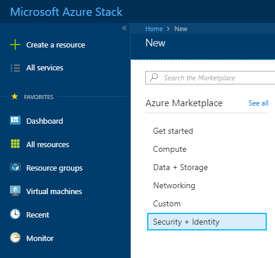
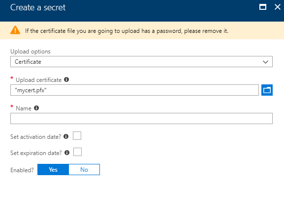

How to create a Service Fabric cluster using the UKCloud Azure Stack portal
Overview
Azure Stack Service Fabric is a distributed systems platform that makes it easy to package, deploy, and manage scalable and reliable microservices and containers. Service Fabric also addresses the significant challenges in developing and managing cloud native applications. Developers and administrators can avoid complex infrastructure problems and focus on implementing mission-critical, demanding workloads that are scalable, reliable, and manageable. Service Fabric represents the next-generation platform for building and managing these enterprise-class, tier-1, cloud-scale applications running in containers.
The following process shows you how to setup a Service Fabric cluster using the Azure Stack portal.
Prerequisites
To complete the steps in this guide, you must have appropriate access to a subscription in the Azure Stack portal.
Creating a new key vault
Before creating a Service Fabric cluster, it is necessary to create a key vault to store the certificates for the cluster. These certificates are used in Service Fabric to provide authentication and encryption to secure various aspects of a cluster and its applications. You can find more information about these certificates here.
Log in to the Azure Stack portal.
For more detailed instructions, see the Getting Started Guide for UKCloud for Microsoft Azure.
In the favourites panel, select Create a resource.

In the New blade, select Security + Identity.

In the New blade, select Key Vault.

In the Create key vault blade, enter the following information:
Name - The name of the key vault.
Subscription - This is your UKCloud for Microsoft Azure subscription.
Resource Group - Select an existing resource group, or create a new one by typing a name for your new resource group.
Location - This will be
frn00006, which is the location of the Azure Stack.Access policies - Configure who can access the key vault and what permissions they have.

Click Create.
You can monitor the progress of your Key Vault's deployment by clicking the Notifications icon.

Adding a certificate to the key vault
Once the key vault has been deployed, navigate to it by clicking All services in the favourites panel, then selecting Key Vaults under the Security + Identity section.
Select your key vault from the list.
In the Settings section of the key vault blade, select Secrets.
On the Secrets page, click the + Generate/Import button.
In the Create a secret blade, enter the following information:
Upload Options - Select the Certificate option.
Upload Certificate - Select the .pfx certificate to upload.
Name - The name of the certificate to identify it within the Key Vault.
Activation Date - Specifies when the certificate will become active.
Expiration Date - Specifies when the certificate will become inactive.
Enabled - Indicates whether or not the secret data can be retrieved.

Click Create.
Repeat as necessary, depending on how many certificates you require.
Gathering key vault and certificate information
During configuration of the Service Fabric cluster, you must provide several details relating to the key vault and certificates. You must also configure access to the key vault for virtual machines and the Azure Resource Manager.
Once you have deployed the key vault, navigate to it by clicking All services in the favourites panel, then selecting Key Vaults under the Security + Identity section.
Select your key vault from the list.
In the Settings section of the key vault's blade, select Access Properties.
On the Access policies page, click Click to show advanced access policies.
Tick the top two check boxes, then click the Save button.
In the Settings section of the key vault blade, select Properties.
Copy the Resource ID and store it for later use.
Select Secrets.
On the Secrets page, select the certificate you added in the previous section.
On the certificate's blade, select the current version.
Copy the Secret Identifier.
Repeat for each certificate that you are going to use for the Service Fabric cluster.
You also need the thumbprint of the certificate(s). For information about how to find this information, see here.
Create a Service Fabric cluster
In the favourites panel, select Create a resource.
In the search bar, search for Service Fabric Cluster.

Select Service Fabric Cluster and click Create.
In the Basics blade, enter the following information and click OK:
Service Fabric Cluster Name - The name of your cluster.
Node Type Prefix - Prefix for the name of each node (VM).
Primary Node Type Size - Size of the VM scale set for the primary node type.
Additional Node Type Sizes - For every additional node type, add an array with a count of the nodes in each node type. For example, if you want two additional node types with three nodes in each, enter
3,3(separating the amount of nodes for each node type with a comma).Admin Username - The admin username for each node.
Password - The admin password for each node.
DNS Service - Select Yes to use DNS service, which is an optional system service that enables you to map DNS names to a service name and discover other services using the DNS protocol. If you have applications with existing URLs that you intend to use with Service Fabric, DNS service will help you use the standard DNS protocol (as an alternative to the Service Fabric Naming service) for resolving service names.
Repair Manager - Select Yes to use Repair Manager to enable patch orchestration on node types with a durability of bronze, which helps keep your VMs up to date.
Service Fabric deployment package URL - Specify the URL to download the Service Fabric deployment package from. For off-line scenarios, download the service fabric package from the URL specified and upload it to a blob and enable anonymous access and specify the URL here.
Subscription - This is your UKCloud for Microsoft Azure subscription.
Resource Group - Select an existing resource group, or create a new one by typing a name for your new resource group. Note that to create a Service Fabric cluster, the resource group must contain no other resources.
Location - This will be
frn00006, which is the location of the Azure Stack.

In the Network Settings blade, enter the following information and click OK:
Service Fabric TCP Port - Service Fabric cluster TCP gateway port to use to connect using the Service Fabric client.
Service Fabric HTTP Port - Service Fabric cluster HTTP gateway port to use to connect using the Service Fabric Explorer.
Service Fabric Reverse Proxy Port - Service Fabric cluster reverse proxy port
Custom Application Endpoints - Custom endpoints to open for connections to applications running on this cluster. Enter endpoints separated by commas, for example,
80,8080,8081.Custom ports to open in the Network Security Group - Custom ports to open in the Network Security Group. Enter ports separated by commas, for example,
3389,80,8080,8081.
In the Node Configuration blade, enter the following information and click OK:
Image SKU - The image template that each node is built from.
VM Size - The size of each node.

In the Security blade, enter the following information and click OK:
Source Key Vault - The resource ID of the key vault that you gathered in the previous section. This should be in the format of
/subscriptions/<SubscriptionId>/resourceGroups/<ResourceGroupName>/providers/Microsoft.KeyVault/vaults/<VaultName>.Cluster Certificate URL - The Secret Identifier of the cluster certificate that you gathered in the previous section. It should be in the format of
https://<VaultEndpoint>/secrets/\<SecretName>/<SecretVersion>.Cluster Certificate thumbprint - Cluster certificate thumbprint that you gathered earlier. For example,
1742635FBCC5F9A442582516A7292523686DE3D7.Server Certificate URL - The Secret Identifier of the cluster certificate that you gathered in the previous section. It should be in the format of
https://<VaultEndpoint>/secrets/<SecretName>/<SecretVersion>.Server Certificate thumbprint - Server certificate thumbprint that you gathered earlier. For example,
1742635FBCC5F9A442582516A7292523686DE3D7.Use Reverse Proxy Certificate - You may specify a SSL certificate to be used by the reverse proxy you have enabled. Doing so will cause the reverse proxy to communicate using HTTPS. If no certificate is specified, then the reverse proxy will communicate using HTTP instead.
Admin Client Certificate Thumbprints - Comma separated list of admin client certificate thumbprints. For example,
1742635FBCC5F9A442582516A7292523686DE3D7,0272251171BA32CEC7938A65B8A6A553AA2D3283.Non-Admin Client Certificate Thumbprints - Comma separated list of non-admin client certificate thumbprints. For example,
1742635FBCC5F9A442582516A7292523686DE3D7,0272251171BA32CEC7938A65B8A6A553AA2D3283.

Click OK, then Create.
You can monitor the progress of your Key Vault's deployment by clicking the Notifications icon.
Feedback
If you find an issue with this article, click Improve this Doc to suggest a change. If you have an idea for how we could improve any of our services, visit UKCloud Ideas. Alternatively, you can contact us at products@ukcloud.com.